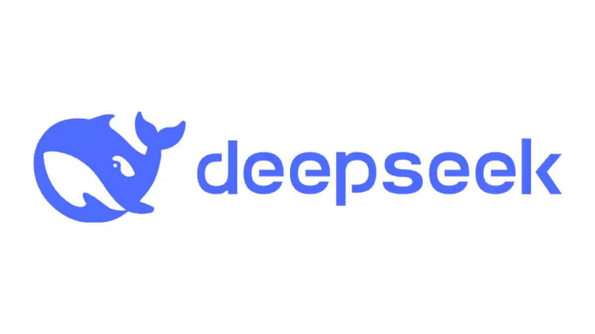

Teknologi Terbaru di Tahun 2025
DeepSeek adalah sebuah sistem berbasis Artificial Intelligence (AI) yang dirancang untuk analisis data kompleks dan penyelesaian masalah menggunakan pendekatan deep learning. Walaupun namanya mirip dengan beberapa proyek AI lain, dalam konteks ini, DeepSeek berfokus pada pemrosesan data besar dan pencarian informasi yang mendalam.